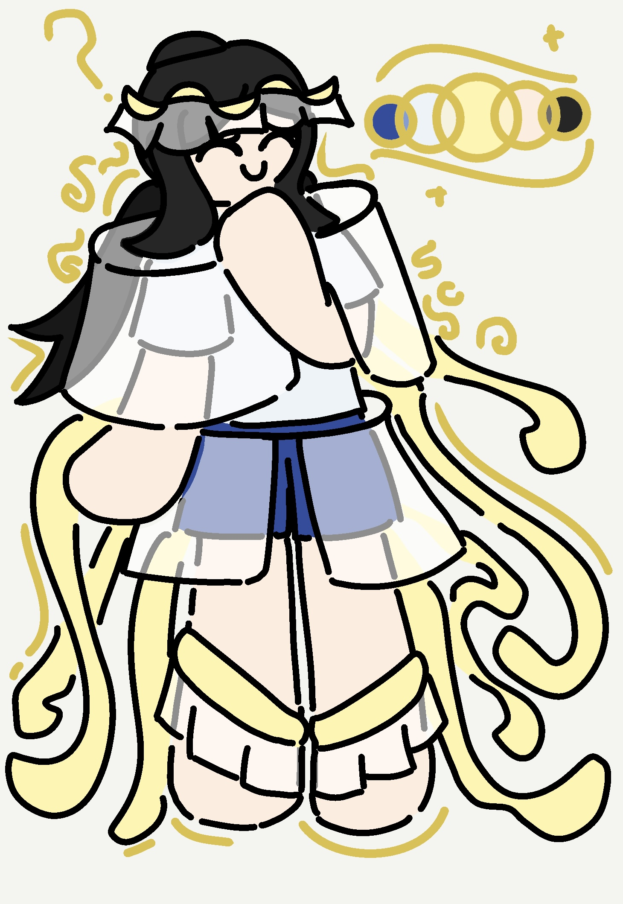
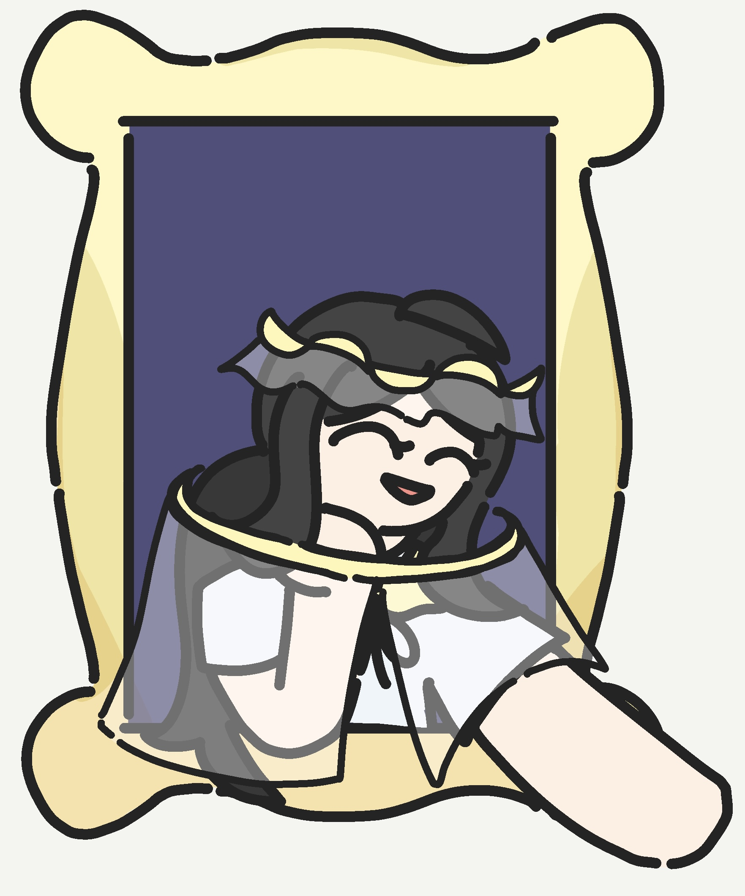
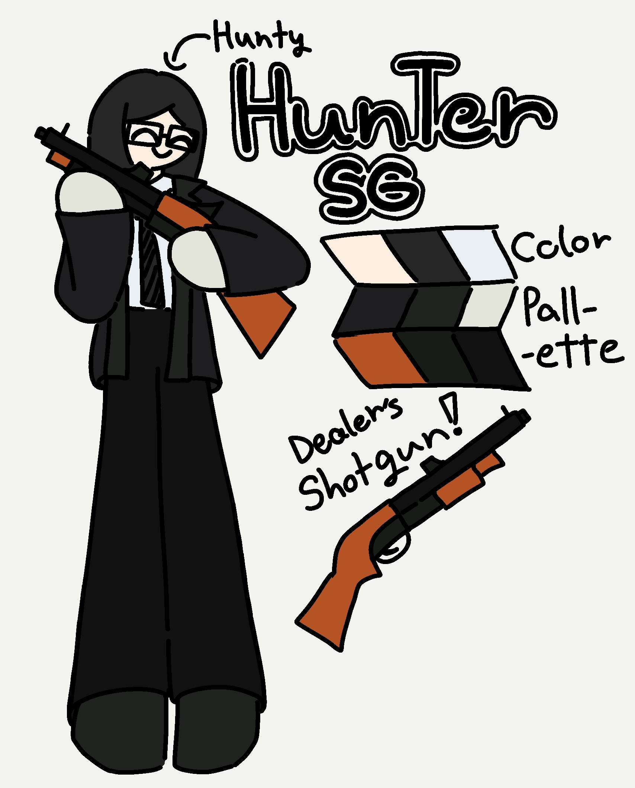
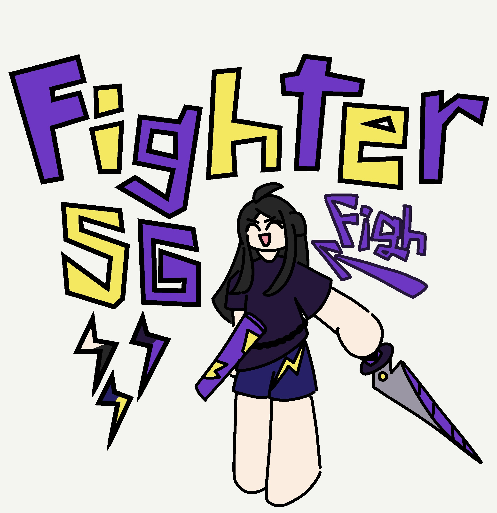

The Adorable Duo.


About The Adorable duo (aduo):
The Adorable Duo are two SGs that represent the surface impression of Sweettooth.
The best way to describe them is "right brain and left brain".
They're essentially the Protagonists of MSG
and one of the first SGs Sweettooth ever made.
This duo is unintentionally inspired by The Hunger Games.
About Prim:
Prim is the 'creative'
and 'energetic' SG.
She has a curiosity of a cat and the survival instinct of a toast.
Prim attacks by shooting something called "Colordrogens"
and each colors has its corresponding attributes to it.
Prim's Colordrogens:
- Red = Pyrogens(fire)
- Blue = Hydrogen(duh)
- Yellow = uhh...Yellowgen(??)
About Arch:
Arch is the 'logical'
and 'strategic' SG.
Organizes thoughts and ideas to excute yet having an accuracy
of a bottle flip.
Her entire life is just try and error.
When one of Arch's arrow is affected by one of Prim's Colordrogens,
that arrow carries over the attribute of the color, becoming something similar to tipped arrows in Minecraft.
Super Duper Stwong God-chan!


About God SG:
"Super Duper Stwong God-chan!" AKA The God SG.
She is the mother/manager/semi-creator? of all SGs and
the charactrisation of Sweettooth's frontal cortex.
She is considered mysterious by most SGs because what I wrote above is all they know about her.
But little did they know that that's the only setting I made for God SG
so that's all she is basically...
BTW she likes to throw anvils at people.
RAIDEN SHOTGUN.


About Raiden Shotgun (RDSG):
Raiden Shotgun is a duo that represent Sweettooth's anger management options.
They're the embodiments short time and long term which reflect their mindsets.
These two are most competent fighters among SGs so they are quite strong I guess.
The duo name is based off Raiden shotgun meme from Genshin impact.
About Hunty:
Hunty is the 'unreadable' and 'quiet' SG.
She's the one who tanks up all the stress to her limit and explodes on small inconvenience.
Despite looking mysterious and calm, Hunty is quite a goofball and sarcastic SG who likes to joke around.
The only reason her name being 'Hunter' is because she has a shotgun and why don't remember why I gave her one.
About Figh:
(G is not silent)
Figh is the 'agressive' and 'loud' SG.
She's kind of always angry and loud as brick, as well as always carrying her Katana Sword thingy.
Figh is based off raiden multiverses all across the Hoyoverse games.